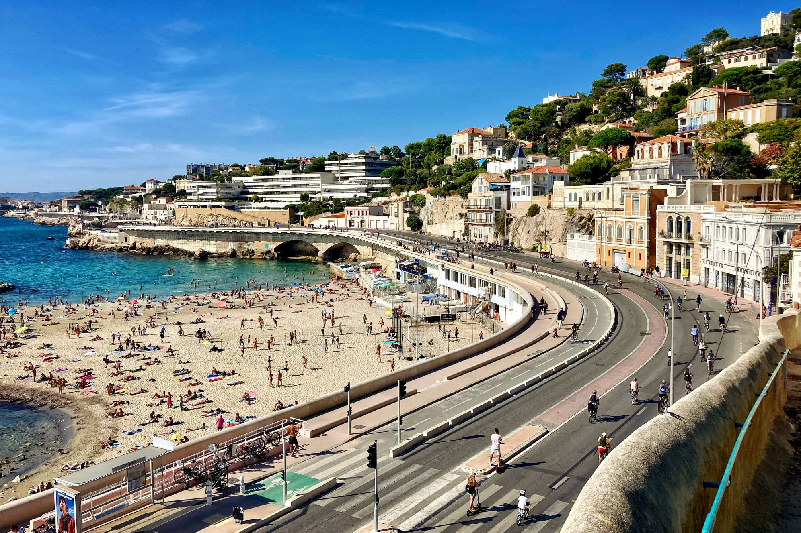
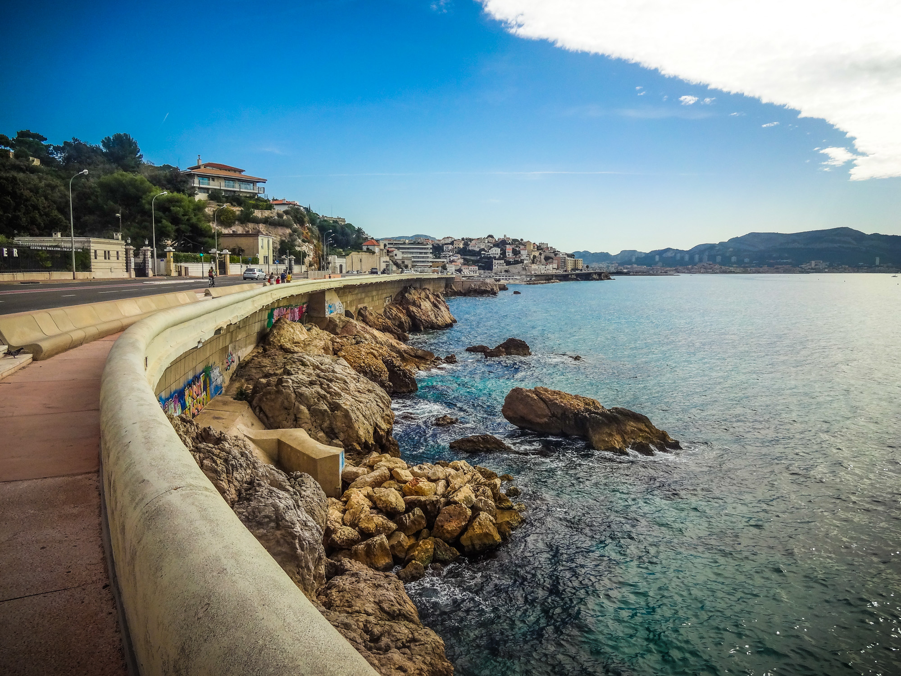
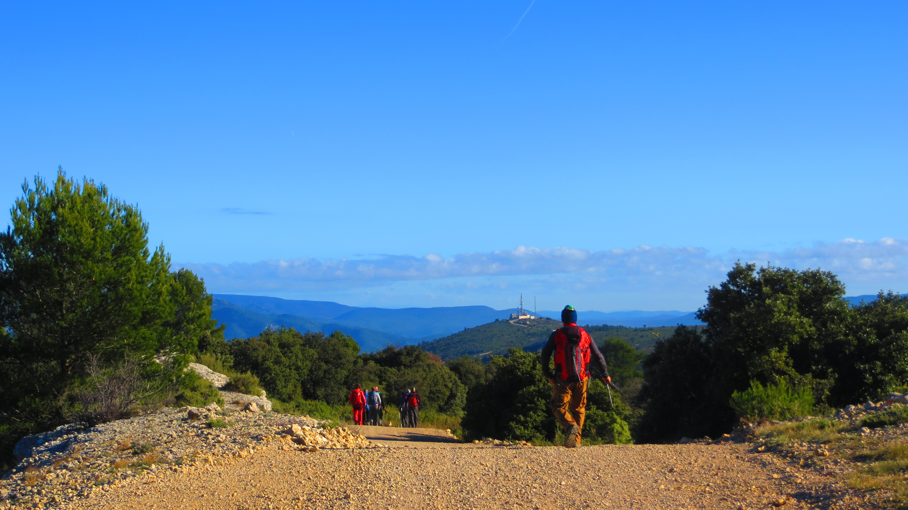

Les randonnées à ne pas rater
Les 5 meilleures randonnées de marseille :
Du parc borely
a la corniche
Difficulté : facile
Distance : 4.5km
Durée : 1H30


de Callelongue
à Marseilleveyre
Difficulté : facile
Distance : 5km
Durée : 2H
le sentier du
Petit-Prince à Cassis
Difficulté : facile
Distance : 2.5km
Durée : 1H
Le Mont du Marseillais
au massif du
Garlaban
Difficulté :moyenne
Distance : 9km
Durée : 4H

le Grand Sentier
de la Côte Bleue
Difficulté : facile à difficile
Distance : 2km à 12km
Durée : 1h à 5h